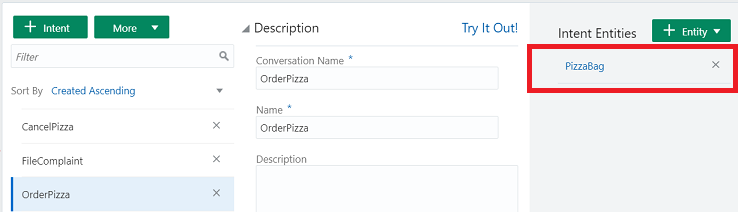
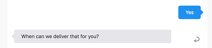
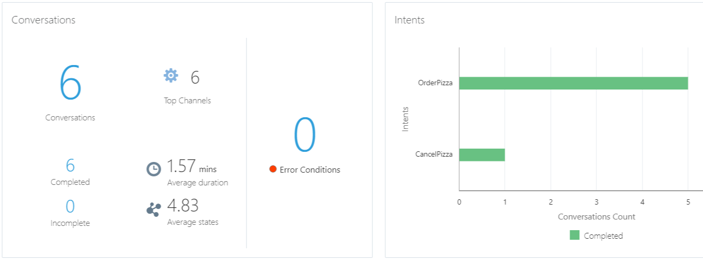
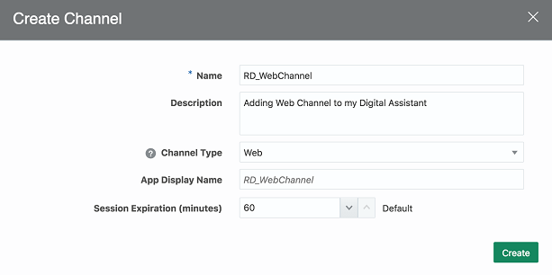

Oracle OpenWorld 2019 Hands-On Lab - From Zero to Chatbot and Digital Assistant in Under Two Hours
In this lab, you'll learn how to design a skill and assemble and tune a digital assistant in Oracle Digital Assistant.
A skill is an individual chatbot that is focused on a specific set of capabilities (e.g. helping customers order food from a specific restaurant).
A digital assistant is a master chatbot containing multiple specialized skills. When a user engages with the digital assistant, the digital assistant evaluates the user input and routes the conversation to the appropriate skill. You can populate your digital assistant with skills from the Skill Store and with skills you have designed yourself.
Here’s the scenario for this lab:
You’re part of a project team building a digital assistant to allow your customers to better engage with the various businesses in a major shopping center.
This is the early stage of building the digital assistant and currently it supports use cases for a bank and a major retail store. The next stage of the project is to add a skill to support the new pizzeria that is opening up.
Here is what you need to do:
Complete the pizza skill and test it to ensure it can handle real-world pizza orders.
Add this skill to the shopping center digital assistant and then fine-tune the digital assistant's routing behavior.
If you have time, expose this digital assistant on the shopping center's website for easy access.
Before You Begin
What Do You Need?
To complete this lab, you need:
An Oracle Digital Assistant (ODA) cloud instance. You can get one using either of the following approaches:
Before you can get a trial ODA instance, you need an Oracle Cloud account. If you don't already have one, go to oracle.com/oow19freetier to sign up.
Provision an Oracle Digital Assistant Instance
Once logged in to Oracle Cloud, click the navigation menu in the top left corner, scroll down to and expand Platform Services, and then click Digital Assistant.
Click Instances.
Click Create Instance.
In the Details section of the Instance area, fill in the following details:
Instance Name: Enter a name that reflects usage of the environment. For example, for a development environment, you might use something like oda-dev1.
You can use a name of up to 20 characters. It must start with a letter, and can contain only letters, numbers and hyphens (-). It cannot end with a hyphen (-).
Use a different name for each environment you create.
Description: (Optional) Enter a brief description of what the instance will be used for.
Notification Email: Status reports are sent to this email, including notice of when your instance has been created.
Region: Select Phoenix.
Tags: (Optional) Add tags and assign tags to this service.
Use the following placement tag from Oracle: ODAPHX_CODE_2019
In the Special Instructions section of the Instance area, select the I have special instructions from Oracle checkbox.
Input your placement tag.
Click Next.
Review the instance details, then click Create.
There will be a short wait before you receive an email confirming that your Digital Assistant instance is ready for you to sign into.
If it takes more than a few minutes to finish, try refreshing the page in the browser.
Once the instance is created, click and select Digital Assistant UI Designer.
A new browser tab will be opened with the Digital Assistant Designer UI.
Import the Starter Skill and Digital Assistant to Your Instance
Now let's prepare our demo environment by setting up the starter pizza skill and starter shopping centre digital assistant.
Import the Pizza Skill:
With the Oracle Digital Assistant UI open in your browser, click to open the side menu.
Click Development and select Skills.
Click again to collapse the side menu.
Import the skill by clicking the Import Skill button that is highlighted in red in the screenshot below.
Navigate to OOW2019HOLPizzaSkill(1.0).zip on your system and click Open.
In the Skills dashboard, select the OOW 2019 HOL Pizza Skill tile to open the skill designer.
If you don't quickly spot the ODA 2019 HOL Pizza Skill, type HOL Pizza into the Filter field located above the New Skill tile.
Import the Starter Digital Assistant
With the Digital Assistant UI open in your browser, click to open the side menu.
Click Development and select Digital Assistants.
Click again to collapse the side menu.
Click Import Digital Assistant.
Navigate to ODA_HOL2019.zip on your system and click Open.
In the Digital Assistants dashboard, select the ODA_HOL2019 tile to open the digital assistant (or DA, for short) in the designer.
If you can't spot the ODA_HOL2019 DA, type ODA_HOL2019 into the Filter field located above the New Digital Assistant tile.
By importing the ODA_HOL2019 DA, you have added a digital assistant and two skills to your instance:
In this part of the lab, we'll complete development of the pizza skill that has been started for us. After familiarizing ourselves with the starter skill, we'll:
Add a new intent to register complaints.
Add logic to the skill's dialog flow to integrate the new intent.
Create an entity for pizza size.
Train and test the skill.
Publish the skill so that it can be used in a digital assistant.
Explore the Skill's Intents and Entities
Before we get to work, let's take a quick look at the intents and entities in the partially-developed pizza skill.
Intents are classifications of what users want to do, such as order a pizza.
Entities are types of information that you expect in the user input for a given intent, such as the size of pizza the user wants to order.
You should see your clone of the skill open in the skill designer. In the left of the designer, the Intents icon () should be selected.
Now do the following:
Scroll through the page to look at the details for the currently selected intent (CancelPizza).
Click the OrderPizza intent and quickly scan the Examples section, which contains utterances such as "Can I order a Pizza?".
These phrases will be used to train the skill's model to understand the various ways someone might ask to order a pizza.
In the left navigation for the designer, select .
Select the PizzaCrust entity and look at how it is configured.
As you can see, this entity consists of a list of values that reflect the types of crust that a user might want for their pizza. If a user enters one of these values in their initial request, the skill won't prompt them for that detail later.
Now select PizzaType and see how it is configured.
Train and Test the Skill
Locate the Train () on the top right side of the page.
Click , click Submit, and then wait a few seconds for the training to complete.
Find the Skill Tester icon () in the bottom of the skill's left navigation bar and click it.
In the tester's Message field, type I want to order pizza, press Enter.
You should see a prompt to order a pizza and a list of pizzas that you can select from.
Feel free to try some other phrases of your own for ordering pizza. You may have varying success since at this point the model is only trained with a small number of phrases.
Click the Reset button at the top of the tester window and then close the tester.
Create the File Complaint Intent
Now we'll add a new intent for customers who want to register complaints.
In the left navigation for the designer, select .
Click the + Intent button.
In the Conversation Name field, type File Complaint.
In the Name field, type FileComplaint.
Copy the example sentences below, paste them into the Enter your example utterances here field, and press the Enter key. (You can copy and paste them all at once.)
I am upset
you charged me too much!
I want to file a complaint
I am not happy with my recent order
my order arrived an hour late
you sent the wrong pizza
My pizza was cold
That pizza was awful!
I want to speak with a manager
Can I raise a complaint?
You'll notice that it's fine for utterances to have inconsistent punctuation and capitalization.
Retrain the Skill and Test the New Intent
To enable the skill to understand the new intent along with the previous intents, you need to retrain it. You'll also want to test the new intent to see if it matches with your input phrases.
Click , click Submit, and then wait a few seconds for the training to complete.
To do a quick test of the new intent, click the Try it Out! label (), which is to the right of the intent's Description panel.
The Try Out Intents/Q&A dialog appears.
Select Intent.
In the Message field of the dialog, type I have a complaint and click Send and see how well it matches with the available intents.
Now enter I need to talk with a manager and click Send.
For this phrase, FileComplaint should have the highest confidence score, but the other intents might have scores above 0.
Now enter I want to complain and click Send.
As you can see the confidence scores for this phrase are particularly low, even though we know it's for a complaint. Let's use this opportunity to enhance the training examples.
Make sure that the FileComplaint radio button next is selected and then click Add Example.
Click , click Submit, and then wait a few seconds for the training to complete.
Now, back in the Try Out Intents/Q&A dialog, click Send to retry "I want to complain".
At this point, you should see a very high confidence score for the FileComplaint intent, which is no surprise. Let's try a similar phrase with "complain" in it to see if the new utterance helps.
Now enter I'm going to have to complain and click Send.
This utterance should also match most closely with FileComplaint, but there might not be so much separation between it and OrderPizza, so we should add this one to the training utterances as well.
Make sure that the FileComplaint radio button is selected and then click Add Example.
Click , click Submit, and then wait a few seconds for the training to complete.
This process of testing, checking intent resolution, and adding new phrases is necessary to properly train the skill. Typically you would do this over many iterations and include many different users.
Add an Entity
When a customer orders a pizza, they will want to tailor it to their needs and taste, with size, crust, and type all being variable elements. As such, these elements need to be specified. In our pizza skill, they are represented by entities.
So far we have custom entities for pizza type and pizza crust. Now we'll create one for pizza size.
Create an Entity for Pizza Size
In the left navigation for the designer, select .
Click to create a new entity.
In the Name field, change the value to PizzaSize.
In the Configuration section, in the Type dropdown, select Value list.
Click .
For Value, type Small.
For Synonyms, type Personal, press Tab, and type smallest.
Click Create.
Following the pattern in the previous four steps, add the value Medium and the synonym middle.
Following the same pattern, add the value Large and the synonyms Big, grande, and biggest.
Add PizzaSize to a Composite Bag Entity
To simplify the collection of all of the user input that is required to order a pizza, we're going to use a composite bag entity. With a composite bag entity, the skill recognizes any entity values supplied in the original input and prompts the user for any required entities that are missing.
The PizzaBag composite bag entity has already been created, and it contains items for PizzaType, PizzaCrust, and DeliveryTime (the latter of which is based on the Time system entity). Now let's add PizzaSize to PizzaBag.
Select the PizzaBag entity.
Click .
On the Add Bag Item page, fill in the following values:
Name:PizzaSize
Type:Entity
Entity Name:PizzaSize (If prompted in a popup, select Overwrite.)
Maximum User Input Attempts:4
Error Message:Sorry, '${system.entityToResolve.value.userInput!'this'}'
is not a valid pizza size.
Scroll down in the dialog and click .
For the value, enter What size do you want your pizza to be? and press Enter.
Again, click .
For the value, enter Please choose small, medium, or large. and press Enter.
At the top of the dialog, click Close.
Here is what the PizzaBag composite bag should look like in the designer:
Note: For an entity to be recognized when parsing the user input message, it needs to be associated with an intent. If you select the Intents tab and then select the OrderPizza intent, you can see that PizzaBag has already been associated with that intent.

Update the Dialog Flow with the New Intent
Next we need to update the design of the dialog flow to handle user complaints. The dialog flow is where we choreograph interaction between the skill and its users.
We'll add logic to check if the user is attempting to file a complaint and then map the appropriate action to that attempt. We'll also update the conversation to display the details of the completed order.
Click .
Above the unresolved state, add the new FileComplaint state:
fileComplaint:
component: "System.Output"
properties:
text: "We are sorry to hear you are upset. Soon we will have a complaint form. In the meantime, feel free to call us directly."
transitions:
return: "done"
Important: Make sure that you get the indentation exactly right. Each state starts with two spaces of indentation. With each additional level of indentation, you add two more spaces. Also, when inserting text, make sure that the proper indentation on the next line is preserved.
Within the intent state, add the following transition to map the FileComplaint state with the FileComplaint intent:
FileComplaint: "fileComplaint"
After you have inserted that transition action, this is what the state should look like:
Here the System.Intent component, which is used to resolve the user's input, is now also going to check whether the FileComplaint intent was the top resolved intent. If so, the conversation will move to the fileComplaint state and continue from there.
Lastly, to show the user that the skill correctly understood the order, change the showPizzaOrder state's text property to:
text: "OK, so we are getting you a ${pizza.value.PizzaSize} ${pizza.value.PizzaType} at ${pizza.value.DeliveryTime.date?long?number_to_time?string('HH:mm')}. This will be on our ${pizza.value.PizzaCrust} crust."
When you are done, this is how the state should look:
showPizzaOrder:
component: "System.Output"
properties:
text: "OK, so we are getting you a ${pizza.value.PizzaSize} ${pizza.value.PizzaType} at ${pizza.value.DeliveryTime.date?long?number_to_time?string('HH:mm')}. This will be on our ${pizza.value.PizzaCrust} crust."
transitions:
return : "showPizzaOrder"
Validate and Train the Pizza Skill
Click the Validate button to validate the skill's dialog flow.
(The Validate button is in the top navigation, next to the Train button.)
If validation fails, delete the code in the dialog flow, replace it with the contents of the PizzaSkill_BotML.txt file, and validate the flow again.
Click , click Submit, and then wait a few seconds for the training to complete.
Test the Pizza Skill
Now let's try some things in the tester to see how the skill responds.
Find the Skill Tester icon () in the bottom of the skill's left navigation bar and click it.
Type I want to order a medium pizza in the Message field and press Enter.
Click the Intent/QnA tab and observe the Entity Matches section.
You'll notice that the PizzaSize value is set to Medium:
Click the Reset button.
Now try Can I place an order for a medium cheese pizza to be delivered at 9:00 PM.
As you can see, the skill recognizes values for all of the required entities and expedites the order without further prompting. The PizzaCrust entity is optional, so it defaults to regular crust.
Note: You are not prompted for PizzaCrust because the PizzaBag composite bag entity is configured to not prompt for pizza crust and to use the regular crust as the default.
Click Reset.
Now let’s try one with a gluten-free crust by typing: I'd like a small veggie lovers pizza delivered at 8:00pm, also can you please make it gluten-free?
Click Reset.
Now try Can I place an order for a medium cheese pizza to be delivered at 10:00 PM.
As you can see, the delivery time value is validated. This is handled in the PizzaBag composite bag entity definition.
Click Reset.
Now try Can I place an order for a small medium cheese pizza to be delivered at 9:00 PM.
Since you provided two values for pizza size, it asks you to specify which one.
Click Small to complete the order.
Click Reset.
Next try I want a small cheese pizza.
The skill asks at what time to deliver the pizza.
Don't enter a time. Instead, to see how the skill reacts when the user changes his mind mid-stream, type actually make it large and press Enter.
When the skill repeats the question about delivery time, type 9:00 PM.
This is what the conversation should look like:
As you can see, the skill was able to incorporate the change in the order and continue without missing a beat.
Click Reset and close the tester.
Note: Due to the non-deterministic nature of the natural language processing (NLP) models, it's possible that some intents may resolve slightly differently from what you see in these steps.
Now that we have completed and tested the skill, it's time to add it to our digital assistant. But first we need to publish it:
Click to open the side menu.
Click Development and select Skills.
Click again to collapse the side menu.
In the Skills dashboard, find the tile for your pizza skill.
Click the skill's Options menu () and select Publish.
On the Publish Skills page, click Publish.
Once you have published the skill, note the icon on the skill's tile that shows it is now read-only.
Congrats! Your skill is now ready to be added to a digital assistant!
Set Up the Shopping Center Digital Assistant
Digital assistants are virtual personal assistants that users can interact with using natural language. When a user engages with the digital assistant, the digital assistant evaluates the user input and routes the conversation to the appropriate skill.
Among other things, the digital assistant:
Greets the user upon access.
Upon user request, lists what it can do and provides entry points into the given skills.
Routes explicit user requests to the appropriate skill.
Handles interruptions to flows.
Handles disambiguation.
Handles requests to exit the bot.
Explore the Digital Assistant
The starter DA that you just cloned consists of two skills – FinancialBot and RetailBot. Later, you'll add your copy of the OOW 2019 HOL Pizza Skill to the DA.
To familiarize yourself with the DA, try it out by following these steps:
Click to open the side menu.
Click Development and select Digital Assistants.
Click again to collapse the side menu.
On the Digital Assistants dashboard, find the tile for <your_initials>_ODA and select it to open it up in the designer.
Ensure the Skills icon is selected ().
Notice that FinancialBot and RetailBot are listed there.
Select the RetailBot skill and browse the attributes of its description and interaction model.
Select the FinancialBot skill and browse the attributes of its description and interaction model.
Select .
Note the three intents.
These are built in to all digital assistants. Here's what they are for:
exit: applies when the user signals the desire to exit the current conversation or context in the digital assistant.
help: applies when the user asks for help or orientation.
unresolvedIntent: applies to user input that doesn't match well with the exit and help intents.
Click and select the Configurations tab to take a look at some of the parameters you can adjust to tune and personalize the behavior of your digital assistant.
Of particular interest are the various Confidence Threshold settings. Later on, we'll change one of these settings to show how that affects intent resolution.
Click , click Submit, and then wait a few seconds for the training to complete.
Find the tester icon () in the bottom of the DA's left navigation bar and click it.
In the tester's Message field, type help me, press Enter, and note the DA's greeting and initial menu.
A menu appears showing what you can do with each skill in the digital assistant (at the moment there are two skills). Depending on your screen size, you may need to click the < and > icons to horizontally scroll between the cards for each skill.
Click the Reset button.
Now try entering Do I have enough money in my savings account, pressing Enter, and observing the response.
As you can see, the digital assistant finds its way directly to the FinancialBot and gives you a response without any extra prompts.
Click the Reset button.
Close the tester.
Add the Pizza Skill to the DA
With a new pizzeria opening in the shopping center, we want the digital assistant to support this merchant as well. So let's add the pizza skill to our digital assistant and then train the digital assistant so that it can work with the new skill:
In your DA, select .
Click .
Find the tile for your copy of the pizza skill.
Note: The skill won't appear there if you haven't completed the Publish the Skill part of the lab.
In the tile for your skill, click .
Click the Close button in the top right of the Skill Catalog.
Click , click Submit, and then wait a few seconds for the training to complete.
Personalize Your Digital Assistant
Once you have created a digital assistant and added skills to it, you can customize some of the aspects of the digital assistant, such as the prompts related to the digital assistant’s help and exit intents.
System Intents and Prompts
You can customize the built-in system intents and the prompts that are driven by them.
First, let's add some utterances to the built-in help intent:
In your DA, select .
Select the help intent.
In the Examples section, add the following utterances:
Can someone help me
What can you do
What things do you do
What can I ask you
The digital assistant comes with configurable prompts to respond to various types of user input. These prompts can be modified in the DA's configuration settings.
Let's modify the DA's help prompt:
In the DA, click and select the Configurations tab.
Scroll down to the Conversation Parameters section of the page.
Modify the value of Digital Assistants Help Prompt to Welcome! I can do following things for you:
Click , click Submit, and then wait a few seconds for the training to complete.
Test the Utterances and Modified Prompt
To see the new utterances and prompt in action:
Click the tester icon ().
In the tester's Message field, type Can someone help me, press Enter, and note the DA's response.
Click Reset and close the tester.
Evaluate Routing Behaviors
Before putting the digital assistant into production, let’s use the tester to evaluate various aspects of its routing behavior.
Open the tester by clicking the tester icon ().
Ambiguous Utterance
In the tester's Message field, type What is my balance? and press Enter.
Here’s the conversation:
As you can see, the digital assistant is unsure of what the user wants to do, so it provides a prompt asking the user to choose among the Sport Store (which is the invocation name for the RetailBot skill) and Digital Bank skill intents.
Click the Routing tab and scroll down.
Notice the evaluation in the Intent Calls section that leads to this response:
Both the candidate skills got high scores (100%). And then for each of those skills, the router identified a candidate flow that also scored highly (also 100%).
Since the GiftCardBalance and Balances candidate flows exceed the confidence threshold, and since difference between their scores is less than the Confidence Win Margin value (10%), the digital assistant asks the user to choose between those intents.
Leave the conversation in the tester open (don't reset).
Context Awareness
In the conversation in the tester, select Balances in Digital Bank.
Select checking.
Type How much do I have in my savings?
Here is the response:
.
Notes on What We Just Did
As you can see, the user starts with the question "What is my balance?", goes through a prompt to disambiguate between the Digital Bank skill and the Sport Store skill, and eventually gets her checking account balance. Then the user enters "What is my balance?" again, but this time doesn't have to navigate through any disambiguation prompts. The info in the Routing tab helps to explain why.
Also note that in the Rules section of the Routing tab, you see the following:
So, even though there are matching intents from the Sport Store skill, they are ignored. The Intent Calls section shows all of the matching intents, but the entry for “Current Context”, which contains only the Digital Bank skill’s Balances intent, is decisive.
Non sequitur
Non sequitur refers to interrupting a conversation flow by changing the subject. Here's an example where such interruptions occur because the user needs info from one skill to complete the flow in another skill.
In the tester, click Reset.
Now type I want to order a small cheese pizza and press Enter.
Pizza Skill is invoked and here is the response:
To simulate the user suddenly being unsure if he has enough money, type the following: oh, do I have enough money on my credit card?
At this point the DA detects that the intent corresponds to the Digital Bank skill and offers the user options for cancelling the order and switching to Balances in Digital Bank:
Select Balances in Digital Bank.
The user is presented with his financial details, thus completing that flow. At that point, the DA asks if it can return back to the pizza skill.
Select Yes.

The DA returns to the pizza skill and resumes the conversation where you left it:
Type 9:00 PM and press Enter.
Click Reset.
In this sequence, you started ordering a pizza, confirmed you had enough money in your account, and finished ordering the pizza.
Tune Confidence Thresholds to Optimize Routing Behavior
You can adjust various confidence thresholds to affect routing behavior. For example, you might want user input to have a particularly high confidence score for an intent before it is matched with that intent.
Here's an example that illustrates the impact that tuning of confidence thresholds can have.
In the tester, type Can you cancel my pizza order into the Message field and press Enter.
Your results should look something like this:
Select the Routing tab and scroll down to the Intent Calls section.
As you can see, the input generates matches for both Pizza Skill and Retail Skill, thus explaining the choice that is given to the user in the conversation.
Now we'll change the threshold setting for candidate skills to see what effect this has.
Click Reset and close the tester.
Click , select the Configurations tab, and scroll down to the Routing Parameters section.
Change the Candidate Skills Confidence Threshold value to 0.9.
Click , click Reset, type Can you cancel my pizza order into the Message field, and press Enter.
This time you should see very different results. Notice now how the digital assistant went immediately to order cancellation in the pizza skill.
In the Routing tab, there is no longer a match for Sport Store.
Now that you can see the impact that this setting has, it's best to return its value to a more realistic level.
Click Reset and close the tester.
Click , select the Configurations tab, and scroll down to the Routing Parameters section.
Change the Candidate Skills Confidence Threshold value back to 0.4.
Explore and Evaluate Skill Insights
Now let's take a look at ways to harvest insights from user interactions with the digital assistant.
Click to open the side menu.
Click Development and select Skills.
Click again to collapse the side menu.
Open your pizza skill.
Click Insights () in the left navbar.
In the Conversations tile, you should see that there have been several conversations logged (from completed conversations you had when testing the pizza skill and digital assistant).

Let's run through some more conversations to create some more varied insights data.
Click the Skill Tester icon () in the left navbar.
Start the conversation by entering Hi and
then take a look at the skill response.
As you can see, the skill has not been trained to handle this greeting, so the conversation completes in an unresolved state.
Click Reset.
Now enter I would like to order a special pizza.
A list of pizzas should appear.
Instead of selecting a pizza, enter the following sentences, one after the other:
that's not what I am looking for
need something special actually
how about a sandwich
You'll notice that the skill shows that it's not able to place
an order.
Now we'll use Insights to understand how well the skill managed those conversations and whether can identify any problems the user may have encountered.
Close the tester.
Click Insights () in the left navbar.
In the Conversations tile, you should see that two more conversations completed since you last looked at this report.
Comparing with the state of the report before we added
those two conversations, we can assume that:
The "Hi" conversation resulted in an unresolved intent, as we previously noticed in the Conversation tab of the tester.
The other conversation resulted in a completed "OrderPizza" conversation.
The Conversations report doesn't differentiate between a conversation which completes
with an order and a conversation that completes through the
skill's handling of incorrect input. To better understand
these differences, we have to drill down further.
In the bar graph in the Intents panel, click the bar for OrderPizza to display detail on those conversations.
You should then see something like what's in the following image:
Click the Conversations tab to display summaries of logged conversations.
You'll notice that the first one in the list of these conversations (the most recent) was our attempt to order "a special pizza".
You can click View Conversation link for any of the entries in that list to see the conversation in chat form.
Now click the Paths tab.
Here we'll use the dropdowns to filter our results so that we can focus on specific patterns.
From the Intent dropdown, select OrderPizza.
From the Outcomes dropdown, select Completed.
You should see something like the following:
From the Final State dropdown, select showPizzaOrder to show the conversations that resulted in a pizza being ordered.
Now, from the same dropdown, select maxError.
There's a single conversation that ended
with the maxError state. In that conversation, the previous state is resolveEntities. From that information, we can guess that the skill has moved
to maxError because the appropriate user input couldn't be
captured for all of the required entities.
Congratulations on completing the main part of the lab. If you have some time left,
you can move on to the next part to deploy your digital assistant on a web page.
Bonus Section: Add the Digital Assistant to the Web Channel
Channels carry the chat back and forth from users on various messaging platforms to the digital assistant.
In this part of the lab, we'll configure and publish our DA through a web channel, install a sample client application, and run and test it against the DA.
To get them, navigate to http://bit.ly/amcedownloads, scroll down to the ODA Client SDKS section, select oda-client-sdk-js-samples-19.1.5.0.zip for download, and accept the Oracle Technology Network license agreement.
Create a New Channel
Click to open the side menu.
Click Development and select Channels.
Click again to collapse the side menu.
On the Users tab, click + Channel.
In the Create Channel dialog, fill in the Name field using the form <your_initials>_Channel
From the Channel Type dropdown, select Web.
The completed dialog might look something like this:

Click Create.
Once created, you are returned to the page for the channel.
Open the Route To dropdown menu, enter your DA name in the Filter box, and select your DA.
Switch Channel Enabled to ON.
Copy the the value of the App Id field to a text file.
You will use it later on in this lab while running the sample client application.
Set Up the Web Channel on Your Local Machine
For purposes of this lab, we'll set up using your machine's localhost instead of using a public-facing web server.
Find the oda-client-sdk-js-samples-19.1.5.0.zip file that you just downloaded and extract its contents.
Open a terminal window or command prompt and navigate to the chat-sample-web directory of the contents of the extracted zip.
Run the following command:
npm install
Start the sample ChatSample app by running the following command:
node server.js
After running this command, you should see a message indicating that the server is listening on port 3000.
 Oracle OpenWorld 2019 Hands-On Lab - From Zero to Chatbot and Digital Assistant in Under Two Hours
Oracle OpenWorld 2019 Hands-On Lab - From Zero to Chatbot and Digital Assistant in Under Two Hours Before You Begin
Before You Begin
 to open the side menu.
to open the side menu. Design the Pizza Skill
Design the Pizza Skill ) should be selected.
) should be selected. ) on the top right side of the page.
) on the top right side of the page.

 to create a new entity.
to create a new entity. .
. .
. Set Up the Shopping Center Digital Assistant
Set Up the Shopping Center Digital Assistant and select the Configurations tab to take a look at some of the parameters you can adjust to tune and personalize the behavior of your digital assistant.
and select the Configurations tab to take a look at some of the parameters you can adjust to tune and personalize the behavior of your digital assistant.
 .
. .
. Personalize Your Digital Assistant
Personalize Your Digital Assistant  Evaluate Routing Behaviors
Evaluate Routing Behaviors

 Explore and Evaluate Skill Insights
Explore and Evaluate Skill Insights Bonus Section: Add the Digital Assistant to the Web Channel
Bonus Section: Add the Digital Assistant to the Web Channel